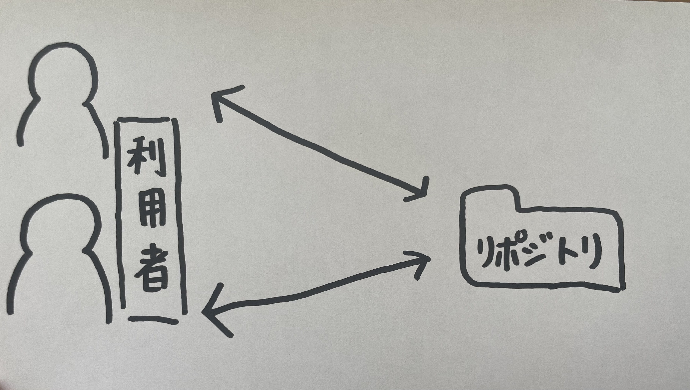

Gitとは、プログラムのソースコードなどの変更履歴を記録・追跡するための分散型バージョンシステムである。

これまでの管理システムでは、上記のようにサーバー上にある１つのフォルダを利用者が共同で使っていました。
しかしチームで共有しているファイルの場合、２人で同時に編集してしまい、先に編集した人の変更内容が消えてしまうといったトラブルが発生してしまう。
👉
自分のパソコンに全ての変更履歴を含む完全なフォルダの複製を作成できるGitが生まれた。
つまり、元フォルダのコピー（ローカルリポジトリ）を手元に置いておけて自由に編集できるということである。
参考文献
【絶対理解できる】Gitとは？特徴やできることまとめ！